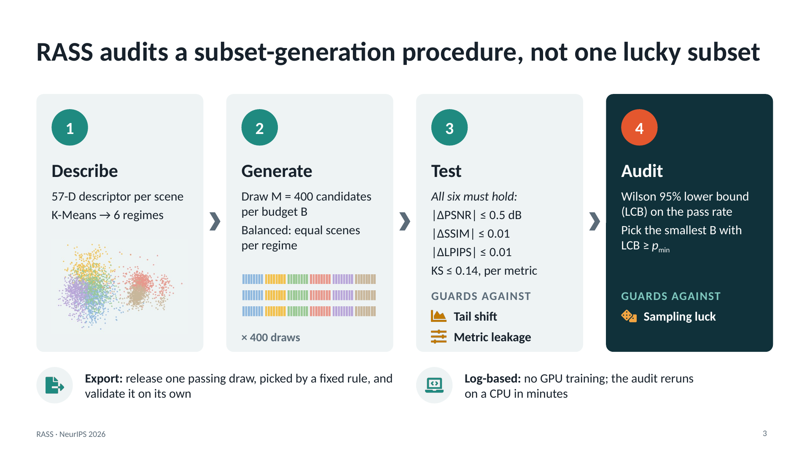
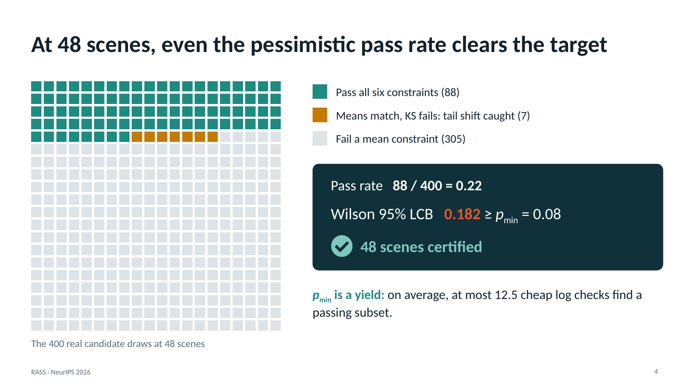
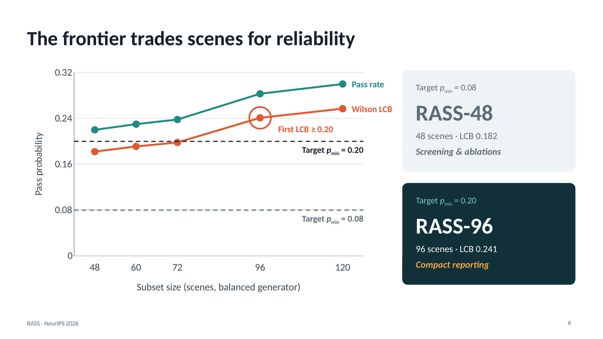
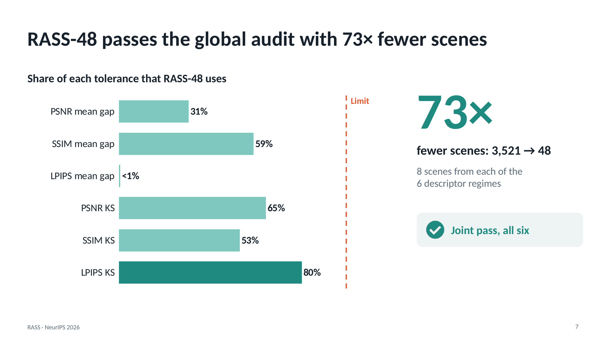
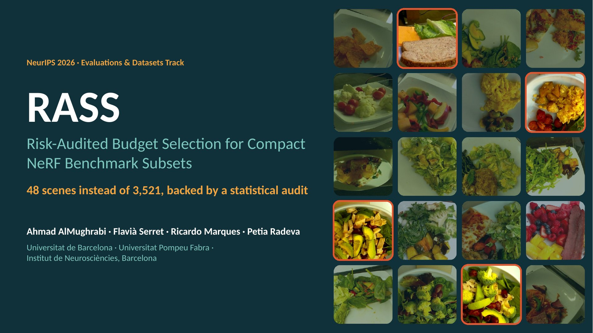

RASS: Risk-Audited Budget Selection for Compact NeRF Benchmark Subsets
NeurIPS 2026 · Evaluations & Datasets Track


TL;DR
Evaluate a new NeRF method on 48 scenes instead of 3,521, and know how often that shortcut holds.
RASS does not hand-pick one small subset. It audits the procedure that draws subsets: every candidate must match the full benchmark's PSNR, SSIM, and LPIPS means and distributions within declared tolerances, and RASS recommends the smallest size whose 95% Wilson lower bound on the pass rate meets a target. On Nutrition5k, RASS-48 is the screening subset (73× fewer scenes) and RASS-96 is the recommended reporting subset, which also passes joint audits over three and four methods. The protocol transfers to DL3DV.
Abstract
Full-dataset NeRF evaluation can require training and evaluating thousands of scenes, making exhaustive comparison expensive even when the benchmark is fixed. We introduce RASS, a risk-audited protocol for constructing compact NeRF benchmark subsets with explicit fidelity criteria. Given full-dataset per-scene logs, RASS repeatedly samples candidate subsets, checks whether their global metric means and score distributions match the full benchmark within user-defined tolerances, and recommends the smallest evaluated subset size whose Wilson lower confidence bound exceeds a target pass probability. We instantiate RASS on 3,522 Nutrition5k-derived food scenes using Zip-NeRF logs for the formal audit and PSNR, SSIM, LPIPS, and Kolmogorov–Smirnov (KS) distributional tests as fidelity criteria. The released 48-scene balanced operating point, RASS-48, is the lowest-cost evaluated screening subset that passes our declared global-fidelity audit and is intended for low-cost early ablations and rapid screening. A stricter target pass probability, pmin = 0.20, selects RASS-96, which we recommend as the compact reporting subset: it also passes joint fidelity audits over three and four view-synthesis methods. We also evaluate alternative subset generators, including uniform random sampling, farthest-first selection, and facility-location diversity sampling, and find that the RASS audit can validate different generators under the same fidelity contract. On DL3DV, a re-declared contract certifies 64 of 140 scenes for four methods under proportional allocation. We release the RASS-48 and RASS-96 scenes, configurations, descriptors, regime labels, seeds, audit scripts, and permitted logs to enable reproducible, compact NeRF evaluation.
How RASS works


Results

| Operating point | Scenes | Passing draws | Wilson LCB | Use |
|---|---|---|---|---|
| RASS-48 | 48 | 88 / 400 | 0.182 | Screening and ablations (pmin = 0.08) |
| RASS-96 | 96 | 113 / 400 | 0.241 | Compact reporting (pmin = 0.20) |
| Full benchmark | 3,521 | – | – | Leaderboards and per-regime claims |

Beyond one method and one dataset
The same audit runs as a joint event over several methods: a candidate passes only if every method meets all of its constraints at once. Equal allocation per regime is biased when regime sizes differ, and sampling each regime in proportion to its size removes that bias.
| Population | Methods in the joint event | Smallest certified size | RASS-48 | RASS-96 |
|---|---|---|---|---|
| Nutrition5k, 3,473 scenes | Zip-NeRF, Feature-Splatting, Instant-NGP | 72 | 14 / 16 | 16 / 16 |
| Nutrition5k, 3,473 scenes | + nerfacto | 96 | 19 / 22 | 22 / 22 |
| Nutrition5k, 3,473 scenes | + BioNeRF | 120 | 23 / 28 | 26 / 28 |
| DL3DV, 140 scenes | nerfacto; + splatfacto; + TensoRF; + Instant-NGP | 32; 40; 64; 64 | – | – |
Smallest certified size: Wilson LCB ≥ 0.08 with proportional allocation (equal allocation does not reach the target up to 120 scenes on Nutrition5k or up to 80 on DL3DV). Subset columns: constraints passed. Adding the pairwise method orderings to the three-method event changes no pass count. On DL3DV, Instant-NGP was trained for 16k steps, so its scores are not comparable across methods.
Using RASS
- Train and evaluate only on RASS-48 (screening) or RASS-96 (reporting).
- Compare with the released per-scene logs on the same scenes, where paired differences remove additive scene effects.
- Report the subset version and the thresholds.
- Train on the full benchmark only for leaderboard placement or to contribute logs.
- Avoid comparing subset results with full-benchmark results.
The audit runs on a CPU in seconds from the released logs. This reproduces the paper's frontier, the RASS-48 and RASS-96 audits, and regenerates RASS-96 exactly:
git clone https://github.com/GCVCG/RASS cd RASS/rass_kaggle_artifact_anonymous pip install numpy pandas scipy pyyaml python scripts/reproduce_tables.py
Slides

Released artifact
- RASS-48 and RASS-96 scene lists, the 3,521-scene audit population, and the cross-method scene list.
- 57-D scene descriptors, their definitions, and the six regime labels.
- Per-scene Zip-NeRF, Feature-Splatting, Instant-NGP, nerfacto, and BioNeRF logs on the Nutrition5k-derived scenes, and DL3DV per-scene metrics for four methods.
- Thresholds, seeds, versioned event configurations, and the audit scripts.
- Croissant metadata with Responsible AI fields, a dataset card, and a validator.
Code: github.com/GCVCG/RASS. Data: Kaggle. Raw Nutrition5k imagery and complete NeRF outputs are not redistributed; DL3DV-derived files are released under CC BY-NC 4.0.
Acknowledgments
This work was partially supported by TRIVISION (PID2025-173459NB-C21), PULSAR (PID2025-173459NB-C22) and PID2022-141566NB-I00, financed by MICIU/AEI/10.13039/501100011033 and by FEDER/UE; AIA2025-163919-C51 (AEI, MICIU); CNS2022-135480 (MICIU/AEI, FEDER, NextGenerationEU/PRTR); ICREA Academia'2022 (Generalitat de Catalunya); the FPI doctoral fellowship; and RES resources at BSC MareNostrum5 (IM-2025-3-0008).